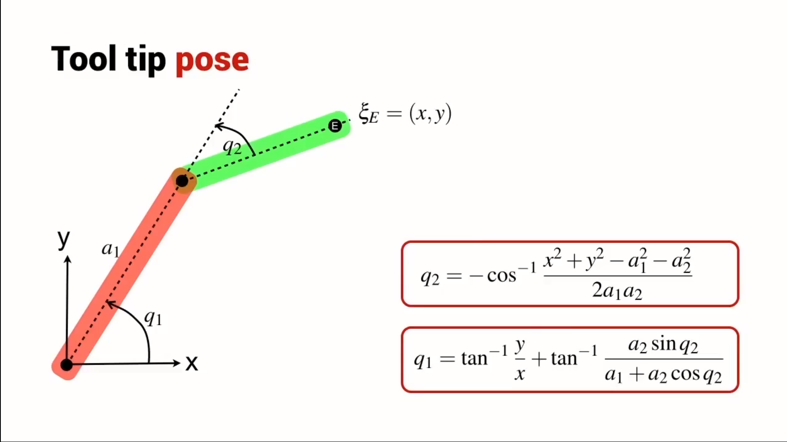
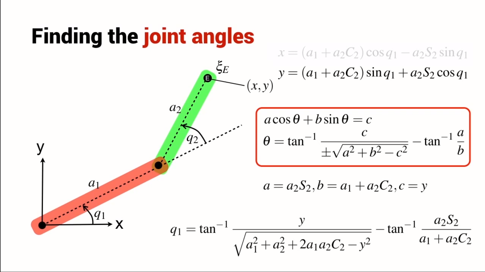

gogs <<
Previous Next >> W16
W14-W15
影片字幕翻譯:
第一部:
Inverse kinematics for a 2-joint robot arm using geometry
We saw this simple two-link robot in the previous lecture about forward kinematics.
我們在上一堂關於正向運動學的講座中看到了這個簡單的雙連桿機構。
The tooltip pose of the robot is simply described by two numbers, coordinates x and y is relative to the world coordinate system.
該機構的姿態由兩個簡單的數字描述，即相對於絕對坐標系的坐標 x 和 y。
So, the problem here is that given x and y, we have to determine the connecting angle Q1 and Q2.
所以，這裡的問題是給定 x 和 y，我們要確定連接角 Q1和Q2.
The solution we will follow in this section is geometric one.
我們將在本節中遵循的解決方案是幾何解決方案。
We're going to start with a simple piece of construction.
我們將從一個簡單的結構開始。
We're going to overlay the red triangle on top of our robot.
我們將在我們的機器人頂部覆蓋紅色三角形。
We know that the end point coordinate is x, y, so the vertical height of the triangle is y,horizontal width is x.
我們知道終點坐標是x，y，所以三角形的垂直高度是y，水平寬度是x。
And, using Pythagoras theorem, we can write thagoras r squared equals x squared plus y squared.
並且，使用畢達哥拉斯定理，我們可以寫出 thagoras r 平方等於 x 平方加 y 平方。
So far.so easy
到目前爲止，很容易
Now, we're going to look at this triangle highlighted here in red and we want to determine the angle alpha.
現在，我們將查看此處以紅色突出顯示的三角形，我們要確定角度 alpha。
In order to do that, we need to use the cosine rule.
為了做到這一點，我們需要使用餘弦規則。
And, if you're a little rusty on the cosine rule, here is a bit of a refresher.
而且，如果你對餘弦規則有點不熟悉，這裡有一點複習。
We have an arbitrary triangle.
我們有一個任意三角形。
We don't have to have any right angles in it and we're going to label the length of this edge as A and the angle opposite that edge, we're going to label as little a.
我們不必在其中有任何直角，我們將這條邊的長度標記為 A，而與該邊相對的角度，我們將標記為小 a。
And, we do the same for this edge and this angle, and this edge and this angle.
並且，我們對這條邊和這個角，以及這條邊和這個角做同樣的事情。
So, all together, the sides are labelled capitals A, B and C, and the angles are labelled little a, little b, and little c.
因此，所有邊都標記為大寫字母 A、B 和 C，角標記為小 a、小 b 和小 c。
So, the cosine rule is simply this relationship here.
所以，餘弦規則就是這裡的這種關係。
It's a bit like Pythagoras' theorem except for this extra term on the end with the cos a in it.
它有點像畢達哥拉斯的定理，除了最後一個額外的術語，其中有 cos a。
Now, let's apply the cosine rule to the particular triangle we looked at a moment rul ago.
現在，讓我們將餘弦規則應用於我們剛才看到的特定三角形。
It's pretty straightforward to write down this particular relationship.
寫下這種特殊關係非常簡單。
We can isolate the term cos alpha which gives us the angle alpha that we're interested in.
我們可以分離出術語 cos alpha，它為我們提供了我們感興趣的角度 alpha。
And, it's defined in terms of the constant link lengths, A1 and A2 and the position of the end effector,x and y.
而且，它是根據恆定連桿長度 A1 和 A2 以及末端執行器的位置 x 和 y 定義的。
We can write this simple relationship between the angles alpha and Q2.
我們可以寫出角度 alpha 和 Q2 之間的這種簡單關係。
And, we know from the shape of the cosine function that cos of Q2 must be equal to negative of cos alpha.
而且，我們從餘弦函數的形狀知道，Q2 的 cos 必須等於 cos alpha 的負值。
This time, let's just write an expression for the cosine of the joined angle Q2.
這一次，讓我們為連接角 Q2 的餘弦寫一個表達式。
Now, we're going to draw yet another red triangle and we're going apply some simple trigonometry here.
現在，我們將繪製另一個紅色三角形，並在此處應用一些簡單的三角函數。
If we know Q2, then we know this length and this length of the red triangle.
如果我們知道 Q2，那麼我們就知道這個長度和這個紅色三角形的長度。
We can write this relationship for the sine of the joined angle Q2.
我們可以為連接角 Q2 的正弦寫出這種關係。
Now, we can consider this bigger triangle whose angle is beta and this side length of the triangle is given here in blue.
現在，我們可以考慮這個更大的三角形，它的角是β，三角形的這條邊長在這裡用藍色給出。
And, the length of the other side of the triangle is this.
並且，三角形另一邊的長度是這個。
So, now we can write an expression for the angle beta in terms of these parameters here.
所以，現在我們可以在此處根據這些參數編寫角度 beta 的表達式。
Going back to the red triangle that we drew earlier, we can establish a relationship between Q1 and the angle beta.
回到我們之前畫的紅色三角形，我們可以建立Q1和角度β之間的關係。
Introduce yet another angle, this one gamma and we can write a relationship between the angle gamma and the tooltip coordinates x and y.
引入另一個角度，這個伽馬，我們可以寫出角度伽馬和工具提示坐標 x 和 y 之間的關係。
Now, we can write a simple relationship between the angles that we've constructed, gamma and beta and the joined angle we're interested in which is Q1.
現在，我們可以在我們構建的角度 gamma 和 beta 與我們感興趣的連接角度 Q1 之間寫出一個簡單的關係。
And, the total relationship looks something like this.
而且，整個關係看起來像這樣。
Quite a complex relationship, it gives us the angle of joined one, that's Q1 in terms of the end effector coordinates y and x, and a bunch of constants, a1 and a2, and it's also a function of the second joint angle, Q2.
相當複雜的關係，它為我們提供了連接的角度，即根據末端執行器坐標 y 和 x 的 Q1，以及一系列常量 a1 和 a2，它也是第二個關節角度 Q2 的函數。
So, let's summarize what it is that we have derived here.1
所以，讓我們總結一下我們在這裡得出的結論。1
We have an expression for the cosine of Q2 and we have an expression for Q1.
我們有 Q2 的餘弦表達式和 Q1 的表達式。
Now, the cosine function is symmetrical about 0.
現在，餘弦函數關於 0 對稱。
So, if we know the value of the cosine of Q2, then there are two possible solutions, a positive angle and a negative angle.
所以，如果我們知道 Q2 的餘弦值，那麼有兩種可能的解，一個正角和一個負角。
We're going to explicitly choose the positive angle, which means that I can write this expression here.
我們將明確選擇正角，這意味著我可以在這裡寫這個表達式。
And now, we have what we call the inverse kinematic solution for this two-link robot.
現在，我們有了這個雙連桿機器人的逆運動學解決方案。
We have an expression for the two joined angles, Q1 and Q2 in terms of the end effector pose x and y, and a bunch of constants.
我們有兩個連接角 Q1 和 Q2 的表達式，根據末端執行器姿勢 x 和 y 以及一系列常數。
You notice that the two equations are not independent.
你注意到這兩個方程不是獨立的。
The equation for Q1, in fact, depends on the solution for Q2.
事實上，Q1 的方程取決於 Q2 的解。
In this case, Q2 is negative and we're going to write the solution for Q2 with a negative sign in front of the inverse cosine.
在這種情況下，Q2 是負數，我們將在反餘弦前用負號編寫 Q2 的解。
Now, we need to solve for Q1, so we're going to introduce this particular red triangle, the angle beta that we solved previously, and the angle gamma which is defined in terms of y and x.
現在，我們需要求解 Q1，因此我們將介紹這個特定的紅色三角形、我們之前求解的角度 beta 以及根據 y 和 x 定義的角度 gamma。
Now, we write a slightly different relationship between q1, gamma and beta, different to what we had before.
q1、ɣ和β之間的關西，和之前求的不同。
There’s a change of sign involved.
涉及到符號的變化。
Then, we can substitute all that previous equation and come up with this expression for q1.
然後我們可代換之前所有等式，並求得此q1方程式。
Again, there is a change of sign here.
同樣，這裡的符號發生了變化。
Previously, this was a negative sign.
先前，這是個負號。
And, here in summary form is the solution for the inverse kinematics of our two-link robot when it is in this particular configuration, where q2 is negative.
這是雙連桿機構在此逆向運動學的總形式，其中q2為負。
Let’s compare the two solutions, the case where q2 is positive and the case where q2 is negative.
讓我們比較兩個解決方案，q2為正和q2為負的情況。
從影片中的內容得知:

第二部:
Inverse kinematics for a 2-joint robot arm using algebra
Here we have the same two link robot as we just looked at but this time we're going tosolve it using an analytical approach , that is we're going to rely much more on algebra ,particular linear algebra rather than geometry .
這裡我們有與我們相同的兩個鏈接機器人只是看著，但這次我們要使用分析方法解決它，即我們是否會更多地依賴代數，特定的線性代數而不是幾何。
We have an expression E , which is the homogeneous transformation which represents the pose of the robots endefector and we looked at this in the last lecture , we can write the endefector pose as a sequence of elementary homogeneous transformations .
我們有一個表達式 E，它是表示機器人 endefector 位置的齊次變換，我們在上一課中看到了這一點，
我們可以將 endefector 位置寫成一系列基本齊次變換。
A rotation by Q1 , a translation along the X direction by A1 , a rotation by Q2 and then a translation in the X direction by A2 .
Q1 旋轉，A1 沿 X 方向平移，Q2 旋轉，然後 A2 沿 X 方向平移。
If I expand this out , multiply all the transformations together , I get the expression shown here ; a three by three homogeneous transformation matrix representing the pose of the robot's endefector.
如果我將其展開，將所有變換相乘，就會得到此處所示的表達式 E ;它是一個三乘三的齊次變換矩陣，表示機械手臂的最終的位置。
Now for this particular two link robot , we are only interested in the position of its endefector , it's X and Y co - ordinate and they are these two elements within the homogeneous transformation matrix , so I'm going to copy those out .
現在對於這個特殊的兩連桿機器人，我們只對它的最終位置感興趣，與它有關的是 X 和 Y 坐標，它們是齊次變換矩陣中的這兩個元素，所以我將把它們複製出來。
So here again is our expression for X and Y and what we're going to do is a fairly common trick , we're going to square and add these two equations and I get a relationship that looks like this .
所以這裡又是我們對 X 和 Y 的表達式，我們要做的是一個相當常見的技巧，我們要將它平方並將這兩個方程相加，我得到一個看起來像這樣的關係式。
Now I can solve for the joint angle Q2 in terms of the endefector pose X and Y and the robot's constants A1 and A2.
現在我可以根據最終位置X 和 Y 以及機器人的常數 A1 和 A2 來求解關節角度 Q2。
Now what I'm going to do is apply the sum of angles identity .
現在我要做的是應用角度之和的特性。
I'm going to expand these terms, sine of Q1 plus Q2 or cos of Q1 plus Q2 and to make life a little bit easier, I'm going to make some substations, so where ever I had cos Q2, I'm going to write C2 and where ever I had sine Q2, I'm going to write S2.
我將展開這些項，Q1 的正弦加 Q2 或 Q1 的餘弦加 Q2，為了讓生活更輕鬆一點，我將建立一些分部，所以只要有 cos Q2，我會將其取代為C2並且在有正弦Q2的地方，我會將其取代為S2。
It's a fairly common shorthand when people are looking at robot kinematic equations.
當人們解決機械手臂運動學方程式時，這是一個相當常見的快速記法。
And here are the equations after making those substitutions.
這是進行替換後的方程式。
Looking at these two equations, I can see that they fall into a very well known form and for that form there is a very well known solution.
看看這兩個方程式，我可以看到它們屬於一個眾所周知的形式，對於這種形式，有一個眾所皆知的解決方案。
So I'm going to consider just one of the equations, the equation for Y and using our well known identity and it's solution, I can determine the values for the variables little a, little b and little c and once l've determined those, then I can just write down the solution for Q1, which x is the equivalent of theta in this particular case.
所以我將只考慮其中一個方程，Y 的方程，並使用我們眾所周知的恆等式和它的解，我可以確定變量小 a、小 b 和小 c 的值，一旦我確定了這些，然後我可以寫下 Q1 的解決方程，在這種特殊情況下，x 相當於 θ。
Here again is our expression for Q1, copied over from the previous slide and we may remember from earlier in our workings that we determined this particular relationship; X squared plus Y squared is equal to this particular complex expression.
這裡再次是我們對 Q1 的表達，從上一張幻燈片複製過來，我們可能還記得在我們早期的說明中，確定了這種特殊關係； X 平方加 Y 平方等於這個特定的複雜表達式。
So I can substitute that in and do some simplification and I end up with this slightly less complex expression for Q1.
因此，我可以將其替換並進行一些簡化，最終得到 Q1 的這個稍微不那麼複雜的表達式。
And it is the same expression that I got following the geometric approach in the previous section.
這與我在上一節中遵循幾何方法得到的表達式一樣。
從影片的內容可得知:

gogs <<
Previous Next >> W16